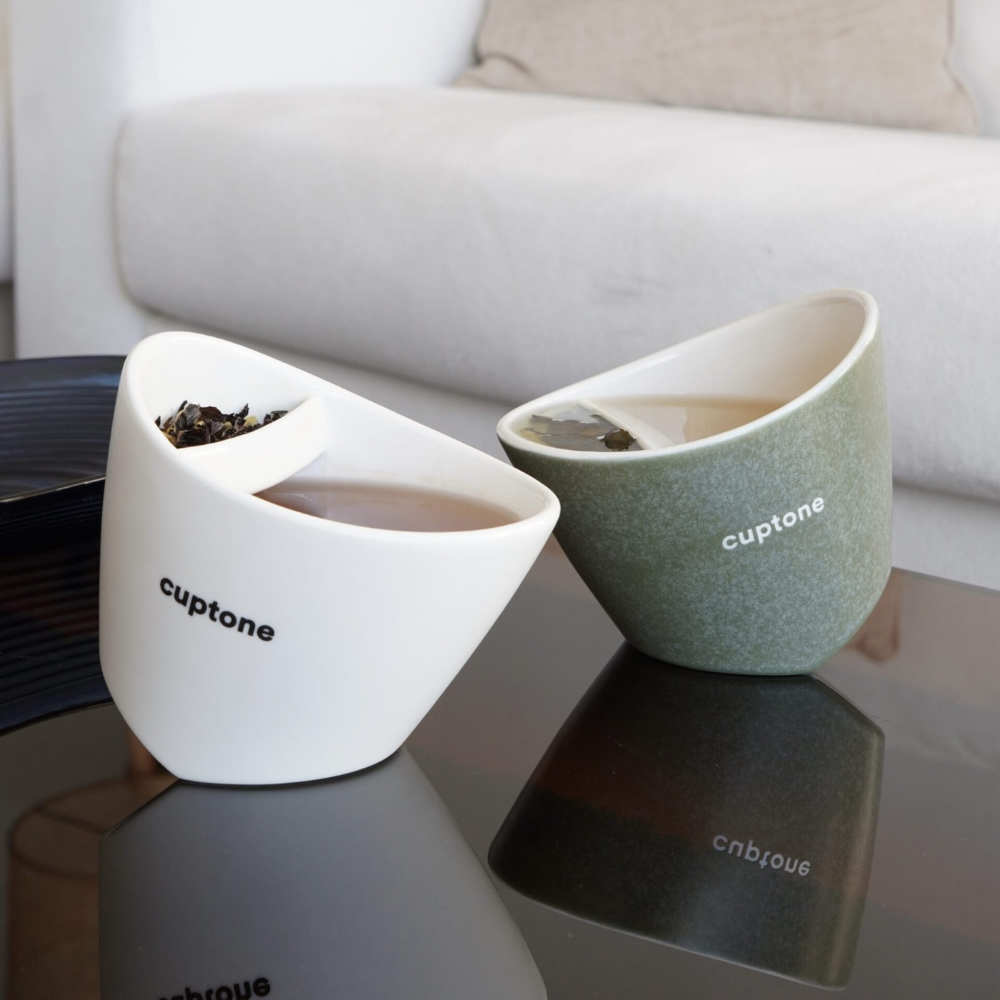

Teardown 09
V字分离式控浓茶杯

用户
办公室喝茶人群、喜欢泡茶的茶饮爱好者，想要自由控制茶汤浓淡
场景
桌面泡茶，茶叶浸泡在水里，泡久了茶汤苦涩，需要手动分离茶和茶水
当前方案痛点
普通泡茶杯，茶叶一直泡在热水里，持续析出物质，茶汤越泡越浓变苦涩；传统公道杯+茶杯组合，占用桌面空间大，需要多个器皿
创意方案
杯子内部有V型隔断，一边放茶叶，一边盛茶汤；倾斜杯子就能让茶水在两个腔室之间流动，随时把茶水和茶叶隔开，自由把控浸泡时长，控制茶汤浓度，单杯完成泡茶，不用额外茶具
核心价值
仅用一个杯子实现茶水分离，省去额外茶具，节省桌面空间；用户可以自主控制浸泡时间，避免茶汤泡苦，随时获得想要的茶水浓度
方案短板与边界
V型隔断的狭小缝隙容易卡茶叶碎末，清洗麻烦；杯子结构特殊，容量有限，不适合大量泡茶；倾倒角度需要控制，操作有学习成本
底层设计思想
在同一个容器内部增加分区隔断，把多个独立功能合并进单一产品，减少配套工具数量，在单个载体上完成多步操作
同思想延伸案例
- 带分隔层的便当盒：一盒多格，不用多个容器分装饭菜
- 双层分隔油壶：储存与导油一体，不用额外量杯
- 分离式保温杯茶隔：杯内隔断实现茶水分离
AI 机会迁移
将多个连续步骤，整合到同一个交互入口，不用切换多个工具；在单一界面内完成多阶段操作，减少工具切换带来的操作成本